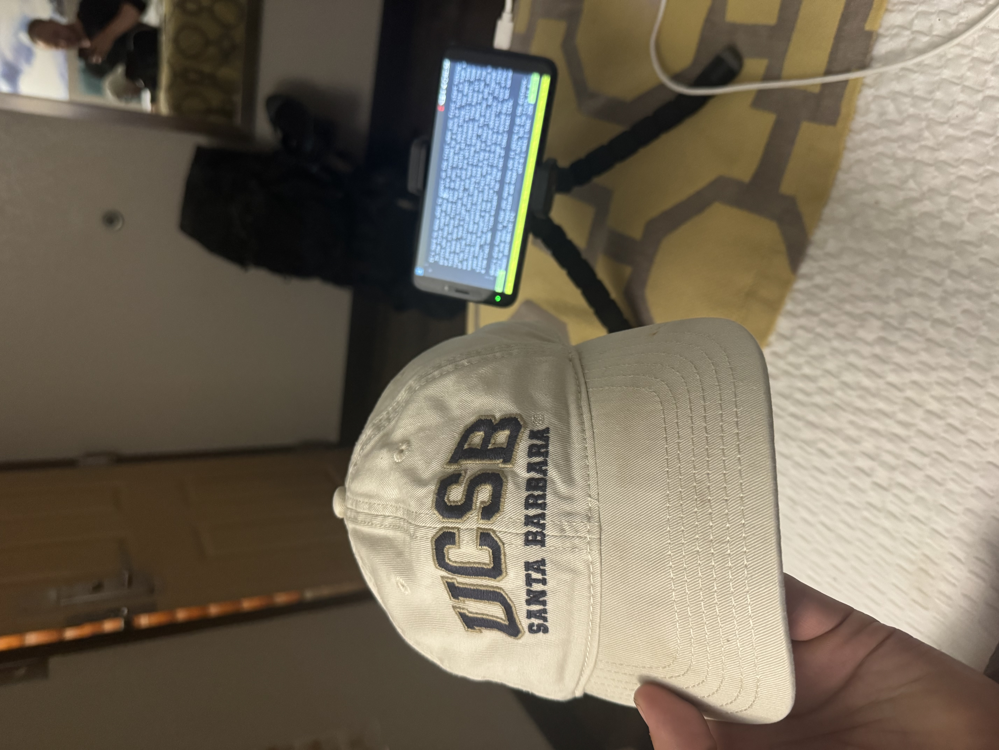

[2026-04-23] Gatlinburg (AT 200 mi)
The First Two Weeks
hello family and friends! i am a little over two weeks into my Appalachain Trail journey and figured it was high time for a blog post :)
big stuff first. i'm a little over 200 miles into the trail. i'm writing this post from Gatlinburg, which is nestled right in the heart of the Smoky mountains. the Smokies are the first "true test" for a lot of folks: the weather conditions in the mountains can be harsh, and the temperatures can drop to below freezing at nights. i'm happy to say that my gear has held up well, and my spirits are high.
i also have a trail name, "top hat"! i am called this because my hat blew off my head while watching a sunrise at the Albert mountain fire tower. that hat wasn't lost (it fell in a place where i was able to walk down and grab it) but the name stuck.

it's hard to know what to expect on the trail when you first start hiking. in the first couple days you are surrounded by a bunch of folks in high spirits who have the same goal as you: hike the whole thing. you meet tons of people in those first fews days of wildly different skill levels. some folks have done thru hikes before and are well prepped: they have all the right gear, have a light pack, and have strong opinions about the new top of the line ultralight tents coming out this year. on the other end, you have folks that apparently haven't hiked a day in their lives, but figured something like the Appalachain Trail would be a grand adventure. just this year someone brought a ten pound bag of rice on the trail "for cost effectiveness". they ditched the rice halfway through the second day, but earned the trail name "rice krispie" for the rest of their trail life.
what's also funny is that you never know who is going to go the distance. really no one does. preparation and experience help, but the truth is a bunch of folks who you would think have no business hiking this thing still end up at Katahdin 6 months down the line. some notable historic examples include:
- "Grandma Gatewood", a trail legend who, as a 60-something grandma, hiked the trail using a potato sack to hold all her gear.
- some blind guy who brought a seeing eye dog and fell literally thousands of times making his way from Georgia to Maine
i still don't know who from "my cohort" will make it to Maine. but i do know rice krispie is still on the trail :)
the trail itself is beautiful. i'll let pictures do most of the talking here. some highlights include:
- Blood mountain, which is around mile 30. this is quite the climb but boasts some of the best views in all of Georgia
- Albert mountain, the 100 mile mark of the trail. Albert has a firetower you can climb up. if the weather is nice, you can see some astounding sunrises and sunsets
- Kuwohi, the 200 mile mark and the highest mountain on the whole trail. i caught a sunrise here today. it was spectacular.
while these are the higlights, there's a lot of ambient beauty all around.


what i've liked the most about the trail, though, are the people. the cool thing about the trail is that relationships can be sticky or ephemeral. there are times i'll run into a stranger, have a deep conversation about our lives and the regrets we have, and never run into them again. there are other times i'll run into someone, hit it off, and hike with them for hours or days. here are some highlights:
- i hiked a bit with this guy called "old". "Old" is around 70 and lives about an hour outside Philadelphia. he is, ironically, the youngest member of his hiking group. he says the group consists of three people, him ("old"), the next oldest ("older"), and the oldest ("history"). "Old" has been section hiking for about five years now, and will finish the full trail sometime this fall. "Old" is very fulfilled in retirement, i thinik because he fills his days with hiking, golf, and hanging out with his buddies. i hope when i'm old i can be as happy as him.
- i had a pack shakedown with Bill. Bill is an older guy who works at the legendary Mountain Crossings outfitter at Neels Gap. A pack shakedown is something where you dump your whole pack contents on the ground and justify every item. i was a bit scared (Bill is legendary in the appalachain trail community) but the shakedown went quite well! Bill give me a bunch of great trail tips and tricks: he taught me how to adjust my pack, tie up my dry bag, and even gave me tips on how to eat my peanut butter. The hightlight: he figured out i have been wearing mis-sized shoes for about 3 years, and set me up with a better pair. Just a generous, kind hearted guy
- i hiked for a few days with "wifi", a section hiker i met at Stanimals around the bend hostel. Wifi is a fascinating guy: he loves fixing cars, playing video games, identifying rocks, and beating me at chess. i'm sad we could not hike together longer
- i had a really deep conversation with a guy named "wooly" at the "fontana hilton", which is the nicest shelter on the trail. the one quote that really stuck with me "happiness is bullshit. fulfillment is where it's at". wooly's argument is that you shouldn't chase happiness, which is fleeting, but instead chase the contentment that comes from building something. i enjoyed our conversation a lot. i think one of the reasons i am hiking the trail is because i am seeking fulfillment.
- i had a few good talks with Archive, a woman who hiked the whole A.T. and has been around the world many times over. she connects with people really easily and has interesting perspectives from all her travels.
i have also made some friends!
- "Stretch", so called because he stretches all the time. Stretch is very kind and deeply chill. he is extremely calm and has a great knowledge of the outdoors from prior backpacking trips. he's realtively young (in his early 20s) but i am consistently impressed by how mature he is
- "Homebound", so called because he is headed to his home state of Maine. Homebound has an inspiring story: i don't want to over expose , but he went through a lot in his life and i'm impressed by his tenacity and resolve at being here. i like homebound because he is always "pushing for home": pushing for the next shelter, the next mountain, the nexxt town. he's also funny, charismatic, and has tons of great stories from his jobs and adventures. he adds a ton of life to the trail and is well loved by everyone who crosses his path (or, more likely, who he passes on the trail)
- "Jackson Storm", so called from his first hike by a kid he was walking with on the New Jersey boardwalk section of the journey. Storm is an awesome guy and fellow Jersey native! Storm knows a bunch of trail lore: famous names and stories, trail challenges, key points etc. he's deeply integrated in the A.T. community and has a genuine love for the trail and the people who hike it. i learn something every time i talk with him. Storm is section hiking the trail and aims to be done by 2030. i'm hoping to be with him in some capacity when he summits Katahdin.